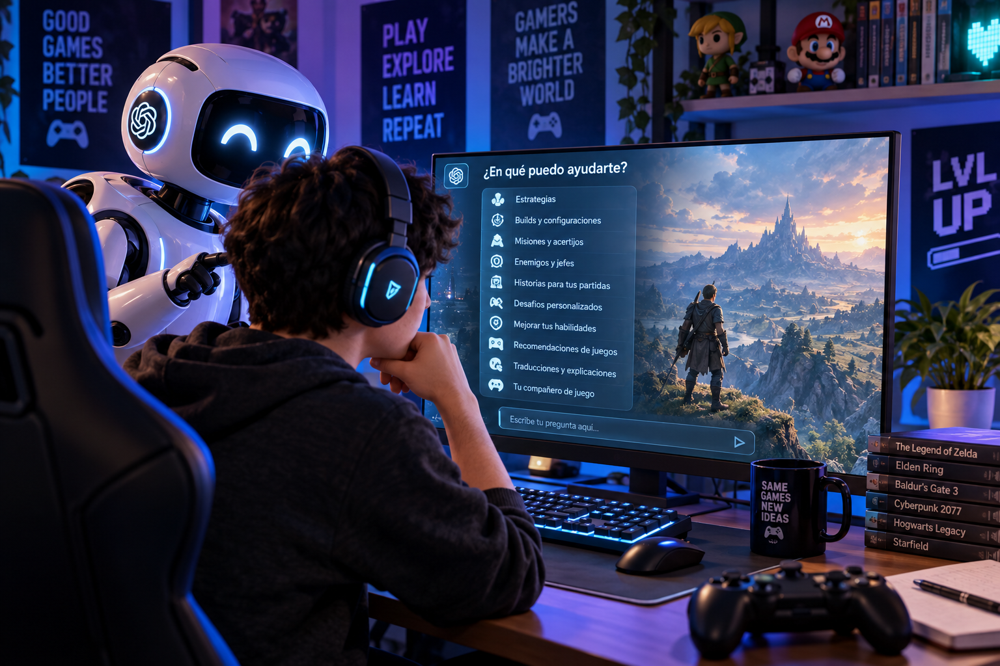

10 formas de usar la IA para mejorar tu experiencia jugando videojuegos
Publicado el 14 de septiembre de 2026 · Lectura de 8 minutos

Publicado por Cómo Hablar con la IA
Introducción
Los videojuegos han evolucionado muchísimo durante los últimos años. Hoy no solamente podemos disfrutar de historias más grandes, mundos abiertos y partidas competitivas, sino que también tenemos nuevas herramientas que pueden ayudarnos a disfrutar todavía más nuestras experiencias de juego.
Una de esas herramientas es la Inteligencia Artificial. Aunque muchas personas utilizan la IA para estudiar, trabajar o crear contenido, también puede convertirse en un excelente compañero para los jugadores.
La IA puede ayudarte a encontrar estrategias, entender misiones, crear configuraciones para tus personajes, descubrir nuevos juegos, mejorar tus habilidades e incluso crear desafíos para hacer que tus partidas sean más interesantes.
Esto no significa que la Inteligencia Artificial tenga que jugar por ti. Al contrario, puedes utilizarla como un asistente que te dé ideas, explique información y te ayude a tomar mejores decisiones mientras tú sigues teniendo el control de la partida.
En este artículo descubrirás 10 formas prácticas de utilizar la Inteligencia Artificial para mejorar tu experiencia jugando videojuegos , acompañadas de ejemplos que puedes adaptar a tus propios juegos.
1. 🎯 Crear estrategias para tus juegos
Cuando estás atascado en un juego o quieres mejorar tu forma de jugar, la Inteligencia Artificial puede ayudarte a encontrar nuevas estrategias. Puedes explicarle la situación en la que te encuentras y pedirle diferentes opciones para intentar superarla.
También puedes contarle qué personaje utilizas, cuál es tu estilo de juego o qué recursos tienes disponibles para recibir recomendaciones más adaptadas a tu partida.
La IA puede ayudarte a:
- 🎯 Pedir consejos para mejorar tu estrategia.
- 🧠 Analizar situaciones difíciles.
- ⚔️ Crear tácticas dependiendo de tu estilo de juego.
Estoy jugando [nombre del videojuego] y estoy teniendo problemas
para superar esta situación: [explica la situación].
Mi personaje es [personaje o clase] y mi estilo de juego es [tu estilo].
Dame 3 estrategias diferentes que pueda probar
y explica las ventajas y desventajas de cada una.
2. ⚔️ Crear builds y configuraciones
Muchos videojuegos permiten personalizar personajes mediante habilidades, armas, estadísticas, objetos o equipamiento. Crear una buena combinación puede marcar una gran diferencia durante una partida.
La IA puede ayudarte a comparar diferentes opciones y crear una configuración de acuerdo con la manera en la que te gusta jugar. Esto puede ser especialmente útil en juegos RPG, MMORPG y títulos competitivos.
Puedes utilizarla para:
- 🧙 Crear configuraciones para tus personajes.
- ⚔️ Elegir armas y habilidades.
- 📊 Comparar estadísticas.
- 🎒 Elegir el mejor equipamiento disponible.
Estoy jugando [nombre del videojuego] con un personaje de clase [clase].
Quiero crear una build enfocada en [daño, defensa, velocidad, soporte, etc.].
Estas son las habilidades, armas y objetos que tengo disponibles:
[escribe aquí tus opciones].
Ayúdame a crear una build y explica por qué elegiste cada elemento.
3. 🗺️ Entender misiones y acertijos
Hay videojuegos con misiones, acertijos y objetivos que pueden resultar difíciles de entender. En lugar de buscar directamente la solución, puedes utilizar la Inteligencia Artificial para comprender mejor qué debes hacer.
Una opción interesante es pedirle a la IA que te dé pistas progresivas. De esta manera puedes intentar resolver el problema por tu cuenta sin recibir inmediatamente la solución completa.
La IA puede ayudarte a:
- 🗺️ Explicar una misión que no entiendes.
- 💡 Dar pistas sin revelar directamente la solución.
- 📋 Ayudarte a organizar los objetivos de una misión.
- 🔎 Explicar qué necesitas para continuar.
Estoy jugando [nombre del videojuego] y tengo esta misión:
[escribe aquí la misión o explica el problema].
No quiero que me des directamente la solución.
Dame primero una pista y, si sigo sin entender,
dame una segunda pista más clara.
4. 👾 Conocer mejor a tus enemigos
Algunos videojuegos tienen enemigos y jefes con patrones de ataque, fortalezas y debilidades que debemos aprender para poder derrotarlos. La Inteligencia Artificial puede ayudarte a analizar estos enfrentamientos y prepararte antes de entrar en combate.
Puedes describir al enemigo, tu personaje y el equipamiento que tienes disponible para pedir recomendaciones sobre cómo enfrentarlo.
La IA puede ayudarte a:
- 💪 Analizar las fortalezas y debilidades de un enemigo.
- 👑 Prepararte para enfrentarte a un jefe.
- ⚔️ Crear estrategias para derrotar a determinados enemigos.
- 🛡️ Elegir el equipamiento más adecuado para el combate.
Estoy jugando [nombre del videojuego] y voy a enfrentarme
a [nombre del enemigo o jefe].
Mi personaje utiliza [arma, clase o habilidades].
Explícame sus principales fortalezas y debilidades
y dame una estrategia para enfrentar el combate.
No me reveles la historia que ocurre después de derrotarlo.
5. 📖 Crear historias para tus partidas
Los videojuegos pueden ser todavía más divertidos cuando tu personaje tiene una historia propia. La Inteligencia Artificial puede ayudarte a crear un pasado, una personalidad y diferentes motivaciones para tu personaje.
Esto puede ser especialmente interesante en juegos de rol, mundos abiertos o cualquier videojuego en el que puedas crear y personalizar a tu propio personaje.
La IA puede ayudarte a:
- 📖 Crear una historia para tu personaje.
- 🧬 Inventar sus antecedentes y su pasado.
- 🎭 Crear su personalidad y motivaciones.
- ⚔️ Imaginar decisiones que tomaría tu personaje.
Estoy jugando un RPG y acabo de crear un personaje llamado [nombre].
Es un [clase/personaje] que utiliza [armas o habilidades].
Crea una historia para mi personaje, incluyendo:
- Su pasado.
- Su personalidad.
- Sus motivaciones.
- Su mayor miedo.
- Su objetivo principal.
Haz que la historia encaje con el mundo del videojuego.
6. 🎮 Crear desafíos personalizados
Si alguna vez has terminado un videojuego y quieres encontrar una nueva manera de jugarlo, puedes pedirle ayuda a la Inteligencia Artificial para crear desafíos personalizados.
Puedes establecer restricciones sobre las armas, personajes, habilidades o recursos que puedes utilizar. También puedes crear retos completamente nuevos para aumentar la dificultad y hacer que una partida conocida vuelva a sentirse diferente.
Puedes crear desafíos como:
- 🎮 Terminar el juego utilizando solamente un tipo de arma.
- ⚔️ Jugar utilizando únicamente determinados personajes.
- 🚫 Establecer restricciones sobre objetos o habilidades.
- 💀 Crear desafíos de dificultad extrema o tipo Nuzlocke.
Estoy jugando [nombre del videojuego] y quiero hacer una partida diferente.
Crea 10 desafíos que hagan el juego más difícil e interesante.
No quiero utilizar trampas ni modificaciones externas.
Los desafíos pueden incluir restricciones de armas,
personajes, habilidades u objetos.
7. 🏆 Mejorar tus habilidades
La Inteligencia Artificial también puede ayudarte a mejorar como jugador. Puedes utilizarla para analizar situaciones de tus partidas, practicar estrategias y crear un plan de entrenamiento adaptado a tus objetivos.
Esto puede resultar especialmente útil en videojuegos competitivos, donde pequeños errores pueden marcar la diferencia entre ganar y perder.
Si puedes proporcionar información sobre tus partidas, estadísticas o situaciones concretas, la IA puede ayudarte a identificar aspectos que podrías practicar y mejorar.
La IA puede ayudarte a:
- 🎯 Analizar cómo juegas.
- 🏋️ Crear planes de entrenamiento.
- ⚔️ Practicar diferentes estrategias.
- 🔎 Identificar errores que puedes corregir.
Estoy intentando mejorar en [nombre del videojuego].
Mi principal problema es [explica tu problema].
Estas son algunas cosas que he notado durante mis partidas:
[describe tus errores o situaciones frecuentes].
Ayúdame a identificar qué estoy haciendo mal
y crea un plan de entrenamiento de 7 días
para mejorar poco a poco.
8. 🔎 Descubrir juegos que podrían gustarte
Encontrar un videojuego nuevo que realmente te guste puede ser complicado cuando existen miles de opciones disponibles. La Inteligencia Artificial puede ayudarte a encontrar títulos que tengan características similares a los juegos que ya disfrutas.
En lugar de pedir simplemente una lista de juegos, puedes explicarle a la IA qué géneros prefieres, qué títulos te han gustado y qué elementos buscas en una nueva experiencia.
Puedes pedirle que:
- 🎮 Analice qué juegos disfrutas.
- ⭐ Te recomiende videojuegos basándose en tus gustos.
- 🔎 Encuentre juegos similares a tus favoritos.
- 🆕 Descubra títulos que quizá no conocías.
Estos son algunos videojuegos que me gustan:
- [videojuego 1]
- [videojuego 2]
- [videojuego 3]
Me gustan especialmente [explica qué te gusta de ellos].
Recomiéndame 10 videojuegos que probablemente me gusten
y explica qué tienen en común con mis favoritos.
9. 🌎 Traducir y entender juegos
No todos los videojuegos están disponibles en nuestro idioma. En algunas ocasiones podemos encontrarnos con diálogos, instrucciones o términos que no entendemos completamente.
La Inteligencia Artificial puede ayudarte a traducir textos y explicar expresiones o conceptos relacionados con el juego para que puedas comprender mejor lo que está ocurriendo.
La IA puede ayudarte a:
- 🌎 Traducir diálogos.
- 📖 Explicar términos o expresiones.
- 🧠 Entender mejor la historia.
- 📋 Comprender instrucciones y objetivos.
Traduce este diálogo de un videojuego al español.
Además de traducirlo, explícame el significado
de las expresiones o palabras que puedan resultar difíciles
de entender.
[pega aquí el diálogo]
10. 🤖 Convertir la IA en tu compañero de juego
Quizá una de las formas más divertidas de utilizar la Inteligencia Artificial sea convertirla en una especie de compañero para tus partidas. Puedes pedirle consejos, compartir tus decisiones y hasta crear historias alrededor de lo que estás viviendo dentro del juego.
En lugar de utilizar la IA solamente para buscar una respuesta concreta, puedes mantener una conversación con ella mientras avanzas en tu aventura. Incluso puedes pedirle que adopte el papel de guía, narrador o compañero de viaje.
Puedes utilizarla para:
- 🧭 Tenerla como guía durante tu aventura.
- 💡 Pedir consejos mientras juegas.
- 🔮 Crear teorías sobre la historia.
- 🧠 Analizar las decisiones que tomas.
- 📖 Inventar historias y situaciones alrededor de tu partida.
Quiero que seas mi compañero de juego durante mi partida de
[nombre del videojuego].
No quiero que me des spoilers.
Quiero poder contarte lo que ocurre durante mi aventura
y que me ayudes con consejos, teorías y decisiones.
Cuando tenga una duda, dame primero una pista
antes de decirme directamente la solución.
⚠️ La IA no siempre tiene la razón
Aunque la Inteligencia Artificial puede ser un excelente compañero para tus videojuegos, es importante recordar que sus respuestas no siempre son correctas o están actualizadas.
Los videojuegos reciben actualizaciones constantemente. Pueden cambiar estadísticas, habilidades, mapas, objetos, personajes o incluso las mecánicas del juego. Por eso, una recomendación que funcionaba anteriormente podría no funcionar de la misma manera después de una actualización.
Si estás buscando información muy específica, especialmente sobre estadísticas, builds, estrategias competitivas o contenido reciente, es recomendable comprobar la información con fuentes actualizadas.
Utiliza la IA como una herramienta para obtener ideas y aprender, pero recuerda que la decisión final siempre es tuya.
🎯 Conclusión
La Inteligencia Artificial puede convertirse en mucho más que una herramienta para trabajar o estudiar. También puede ser un excelente compañero para disfrutar tus videojuegos de una manera diferente.
Puedes utilizarla para crear estrategias, mejorar tus habilidades, entender misiones, conocer las debilidades de tus enemigos, crear historias para tus personajes, descubrir nuevos juegos y hasta inventar desafíos para tus partidas.
Lo más interesante es que no necesitas utilizarla solamente cuando estás atascado. Puedes convertirla en una herramienta que te acompañe durante toda tu experiencia de juego.
Sin embargo, la idea no es dejar que la IA juegue por ti. El objetivo es utilizarla para aprender, experimentar y encontrar nuevas formas de disfrutar tus videojuegos.
🎮 La IA puede darte consejos, pero la aventura sigue siendo tuya.
🚀 Empieza a probarlo
La próxima vez que estés jugando y tengas una duda, en lugar de buscar inmediatamente una solución, prueba a preguntarle a una Inteligencia Artificial.
Puedes comenzar con algo sencillo: pídele una estrategia, una pista para una misión, una recomendación de un videojuego o incluso una historia para tu personaje.
Experimenta con diferentes preguntas y descubre qué tipo de respuestas te resultan más útiles.
🎮 Juega, experimenta y deja que la IA sea parte de tu aventura. 🤖
📚 También te puede interesar
Si te interesa seguir descubriendo nuevas formas de utilizar la Inteligencia Artificial, también puedes leer estos artículos:
- ⚽ Cómo usar la Inteligencia Artificial si eres fan de los deportes
- 🧙 Cómo crear tu propio personaje utilizando Inteligencia Artificial
- 🤖 Cómo crear un personaje Cyberpunk usando Inteligencia Artificial
- ✨ 10 cosas sorprendentes que puedes hacer con la Inteligencia Artificial
- ⚠️ 10 errores que cometen los principiantes al usar Inteligencia Artificial
💬 ¿Te ha resultado útil?
Si este artículo te ayudó a descubrir nuevas formas de utilizar la Inteligencia Artificial mientras juegas, compártelo con tus amigos gamers. 🎮
Tal vez descubran una nueva forma de disfrutar su videojuego favorito.
Y recuerda: la IA es tu asistente, pero tú eres quien juega la partida. 🤖🎮